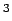

Nächste Seite: Exkurs: Aufwärts: Erzeugung der Oberflächenpunkte Vorherige Seite: Erzeugung der Oberflächenpunkte Inhalt
Die im letzten Abschnitt erzeugten Würfel würden bereits für einen MCA genügen. Um allerdings die Oberfläche wie in 4.4 beschrieben rund darstellen zu können, werden Normalen und damit auch weitere Informationen über die Umgebung der Oberflächenpunkte benötigt.4.1
Um Nachbarschaften auszuwerten, wird die eben ermittelte Würfelliste sortiert und durchlaufen.
Als erstes werden, falls benötigt, die Oberflächenpunkte der drei Kanten erzeugt, welche an die ,,Vorwärtsecke`` angrenzen. Sie bekommen die Koordinate derjenigen benachbarten Ecke, die innerhalb der Flüssigkeit liegt (nur diese liegt explizit vor), plus einen Offset, der proportional zur dritten Wurzel der für diese Ecke gespeicherten Partikelanzahl ist und bereits berechnet vorliegt (Volumen  Partikelanzahl
Partikelanzahl  Kantenlänge
Kantenlänge
Mit dem Oberflächenvertex wird auch seine Normale in Abhängigkeit von der Eckkonfiguration des aktuellen Würfels erzeugt.